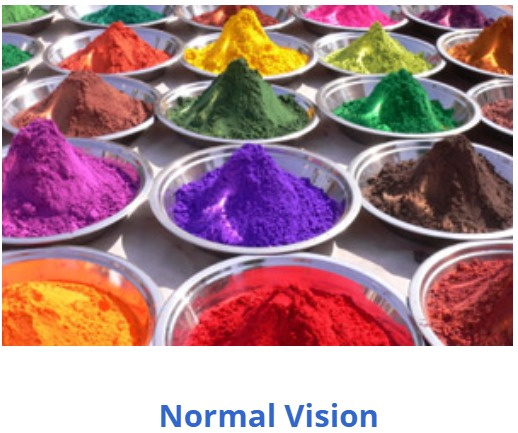

About Protanopia
Protanopia is a type of red-green color blindness where the red cone cells (L-cones) in the retina are absent or non-functional. This causes difficulty in perceiving red light, making it hard to distinguish between red, orange, yellow, and green shades. People with protanopia may see reds as brown, grey, or black, depending on the intensity and surrounding colors. It is a form of dichromatic vision, meaning only two types of cone cells work instead of three.
Protanopia is an inherited condition linked to the X chromosome, which is why it is more common in males—affecting about 1% of men—while it is rare in females. Although it doesn't impact the sharpness of vision, it can cause confusion in situations where color is important, such as reading traffic signals, interpreting graphs, or picking ripe fruits. There is no cure, but people often adapt using context clues or assistive tools like color-filtering lenses or apps.
